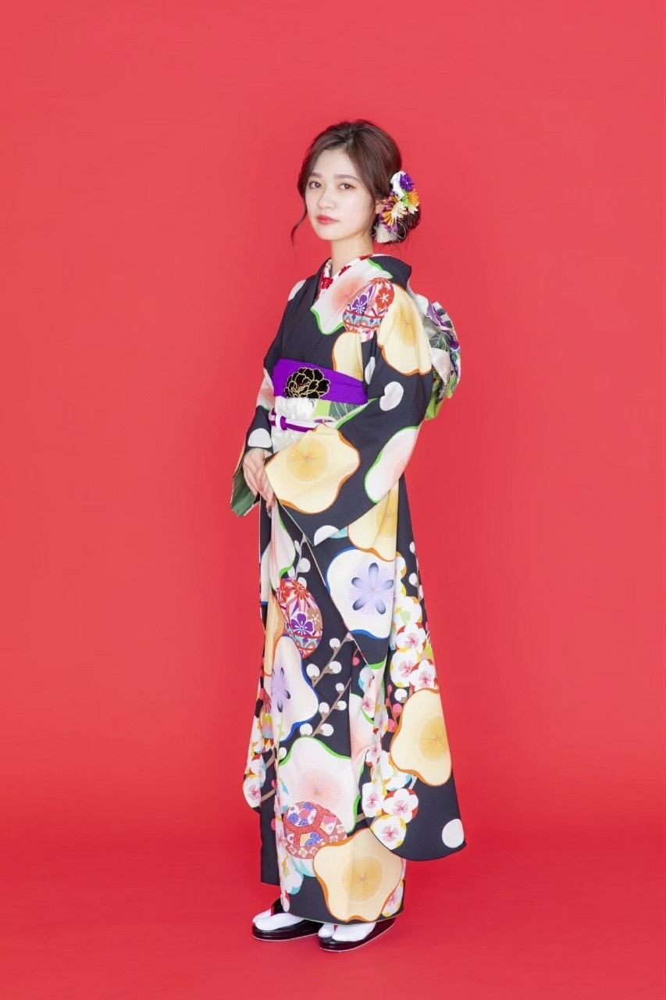
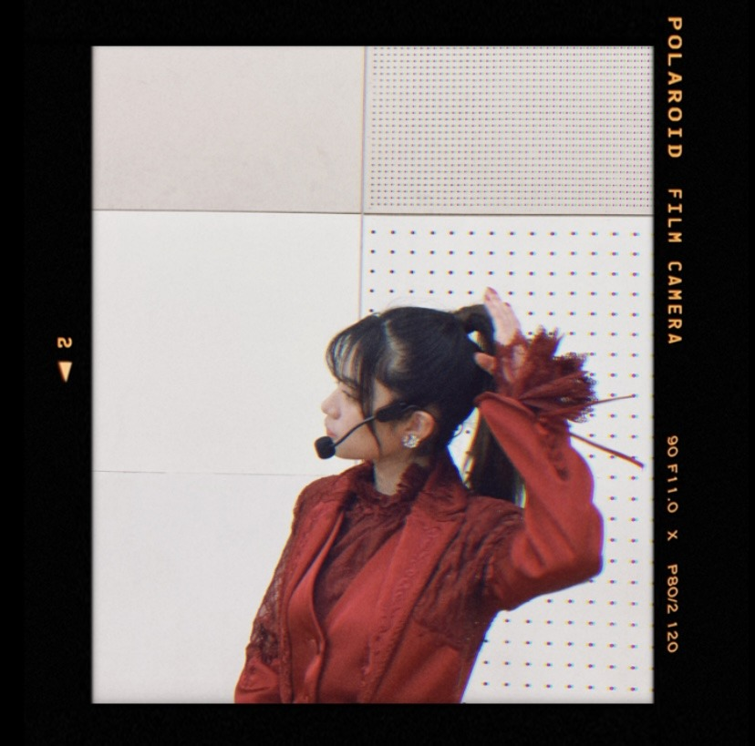

2021/0111Monくろまめ
今年も宜しくお願い致します。
そして、新成人の皆様ご成人おめでとうございます。
どんな形であれ
この日を迎えられた事に感謝して
是非、ご家族や大切なお友達に感謝を
伝えられる日にしてください。
そして、乃木坂三昧
ありがとうございました。✨
乃木坂の歴史を振り返る事が多く
自分が出演していない時間に幼い頃の自分の
エピソードや想い出を後輩達やファンの方が語ってくれてるのを聞いて嬉しい様な恥ずかしい様な気持ちになりました。
でも、それだけの事をやってきたんだと実感でき
そこに喜びを感じられたら
それだけ幼いから乃木坂46というグループとともに成長、歩んできたんだなーと感じられました。✨
今年も是非一緒に歩んでくれると嬉しいです。
写真は私が二十歳の時の
雑誌の撮影での振袖です。


赤色と黒と白が好きな色です。✨
2021/01/11 20:45


コメント(344)
蘭世ブログ更新ありがとう！！！
今日の乃木坂三昧お疲れ様！
たくさんいろんなメンバーの話聞けて楽しかったし、蘭世の話も聞けて幸せな時間だった〜(^^)
Instagramをたくさん更新してくれて本当にありがとう！写真が多くて嬉しいしとにかくかわいいすぎる、、、ほんとうにかわいい、、、。
お年玉がたくさん入ったからミーグリ追加した！
31日のミーグリ楽しみにしてる！
今年初だからたぶん緊張すると思うけど楽しみたいし、今シングルもたくさん大好きって言えるように頑張る！！！
モバメもブログもインスタもありがとう！
いつも笑顔と幸せをありがとう！
まだまだ体調には気をつけてね！
本当にだいすきだよ〜！！！
あいらぶゆーーー！
あいら。
ps.
お手紙出すね時間あったら呼んでください(^^)
インスタいつも最高！
可愛い〜〜(^^)♡
#乃木坂三昧 お疲れ様でした！
久しぶりのような気がする
蘭世ちゃんの振袖姿可愛いすぎる、。、
早く会いたい泣
着物姿の蘭世最高です。
あけましておめでとうございます
乃木坂三昧お疲れ様。
蘭世の優しい声やっぱ良いね。
曲を聴くたび色々とその時々の情景が振り返れて良い機会でしたー！
お互い体調に気をつけて頑張ろうねー！
アンダー特集の時、凄いアンダーみんなの思いが伝わってきた！
早くライブで見たいな！
そして、蘭世可愛い。。
あけましておめでとう！
2021年になったね！
たくさん笑おうね！
今後のブログも楽しみに待ってます！
体調には気をつけてね！
応援してます！
大好きです♡
今年もよろしくね！
頑張って〜！！ファイト！！
蘭世に似合うような男、大人になります。
いつまでも応援します！振袖似合ってます！
今年も応援します。
ずっと応援します。
体調管理には気を付けて下さい。
乃木坂三昧、蘭世の炎のスピーチの話題になってたけど、
何度聞いてもあのスピーチには魂が込められていて、勇気を貰えます。すごく特別なスピーチです。
やっぱり蘭世の言葉には背中を押してくれるような力が込められていると思っていて、いつもそれに助けてもらってます。
本当にいつもありがとう。今年もお世話になります！！
乃木坂三昧ずっと聴いてました。
やっぱ乃木坂が、乃木坂の曲が大好きだなって実感できて幸せな時間でした！
今年もよろしくお願いします(^^)
最初から聴いたよ～乃木坂の歴史を振り返ることが
出来てる嬉しいかったし、
ライブ音源であったけど、蘭世のスピーチの所は
感動した
乃木坂三昧聴いてたよー。
ちょこちょこらんぜ出てたもんね。
良かったよー。
1+1=100だもんね。
新成人めでたいね！いろいろあって成人式ができない地域もあるみたいですがこれから一緒に一社会人として頑張っていきたいですね！
乃木坂三昧お疲れ様！自分は仕事で聞けなかったけどSNSですごく盛り上がってました！！歴史を振り返ってこんなこともあったなーとかあの時はこんな感じだったなーとか色々あるよね
自分も昔は一人でライブ行って一人で盛り上がって一人で帰るみたいなことしてましたw
今はありがたいことに沢山知り合いができたよ！！
いやー成長ですね
これからもよろしくね！！
大好きだよ！！
今日は成人の日でしたね
誰にとっても大きな節目だなと思い
私も毎年自分が成人した日のこと思い出します
寺田さんの懐かしいお写真も見れて
はっぴーだよ、ありがとう〜〜
来年は弟が成人なのでおめでとうの気持ちを
ちゃんと伝えたいです
もちろん、今年も寺田さんと一緒に歩んでいきたい、進んでいきたいです！！何卒、、、
ミーグリまで後少し、、緊張してきました（ ; ; ）
私も赤、白、黒、昔から大好きな色です！！！
ではまた！
すっきーーーー
ゆうき（ゆっちゃん）
今回は、期別、軍団曲、アンダー曲などたくさん出演していて声が聞けて良かったです☺︎これからも乃木坂としてたくさん応援できたらいいな！！
新成人を迎える日に乃木坂三昧を聞いてより乃木坂46が好きになりました！！
そして、好きな曲をいっぱい聴けたし、特に好きなアナスターシャを聴けたのは本当に嬉しかった！！
またブログ更新されるの楽しみに待ってるね！体調には気をつけてね！
メールにインスタにありがとう！
とっても嬉しいです！
最近はコメントに来れなくてごめんなさいです。
ミーグリでは元気な姿を見せられたらと思っています！
今年も1年よろしくお願いします！
20歳の蘭世ちゃんもステキだね〜！
可愛い可愛い！
改めてこの機会に雑誌も見返そうかなー！と！
明日は関東でも雪が降るようで寒くなりそうですので、体調を崩さぬよう気をつけてね！
緊急事態宣言下ではありますが、気を引き締めて頑張っていきましょう！
ではでは、また遊びに来ますねー！
乃木坂三昧お疲れ様でした！
自分はバイトでほとんど聞けなかったけど
Twitter見る限りみんな楽しそうで良かったです
いつもありがとう
ユースケ
あけましておめでとうございます！今年もよろしくお願いします！
今年はどんな一年なるかまだまだ検討もつきませんが、自分にとっても乃木坂にとっても蘭世さんにとっても、良い1年になるように願っています
乃木坂三昧、お疲れ様でした
なにやら蘭世さんの話題が沢山出ていたということで、リアルタイムで聴けていないことがとても悔しい。
でもそれだけ話題が沢山出るのは、蘭世推しとして誇らしいし喜ばしいことです
蘭世さんの行動や言動が、乃木坂ファンの皆さんに印象として残ってる
それだけでとても嬉しいです
これからも沢山生きた証を残していってください
大好きです。
ユウキ
寒いですね
仕事クビになりました
人生ｵﾜﾀ ＼(^o^)／
自分は再来年 成人ですね。
なんか楽しみなようなそうじゃないような……
乃木坂三昧 お疲れ様でした！
蘭世先生の出た部分は勿論のこと、ほとんど全てを拝聴しました。
こちらこそ今年も一緒に歩ませてください。
振袖姿も素敵です！
自分もその3色好きですよ〜
更新して下さりありがとうございます！
モバメもInstagramもいつもありがとうございます！
広島住みの璃音
乃木坂三昧聞きました
長い時間乃木坂を楽しむことができました
まさか蘭世のスピーチをラジオで聞けるとは思いませんでした
これからも楽しませてください
あけましておめでとう！
こちらこそ、今年もよろしくお願いいたします ♂️
紅白見ましたよ！
真っ赤な衣装に最初は驚いたけど、改めて見ると綺麗だね！
蘭世さんが着るとより綺麗が際立ちます☺️
乃木坂三昧お疲れ様でした！
自分は一瞬足りとも聞けませんでしたが笑
乃木坂の曲を聞いてると、この頃の事をよく思い出すよね
懐かしくなります
蘭世さんはどの曲が好きですか？
乃木坂はいい曲ばかりだから選ぶの難しいよね笑
音源を聞くのもいいけど、やっぱライブしたいよね
早く前のような世の中に戻りますように
またコメントします！
夕方からだけど、ラジオ聞けたから蘭世の声聞けたよ。
今年も蘭世らしさ全開でいきましょう！
とにかく体に気をつけて頑張ろう！
今年もよろしくお願いします！！
ラジオ聴いてたよ。
おつかれさま。
また会いたいな。
いつも笑顔や元気をありがとう。
こう
今年も宜しくお願いします。
自分は今20歳で10日に成人式の予定ですが、5月に延期になりました。それでもこのご時世で中止にならなかっただけ良かったと思います。
せっかくなので去年オーダーで作ったスーツを着れなくなるくらいトレーニングも仕事も頑張ろうと思います
寺田さんの振袖姿とても綺麗ですね、寺田さんは可愛いと綺麗、かっこいい姿を表現できていろんな表情がみれていつもファンになって良かったと思います
まだまだ気を抜けないですが健康に気をつけてください。
今年が寺田さんにとってさらに活躍できるよう応援してます
すっかり大人っぽくなったね。
今年は何があるかな〜
まずは、ミーグリかな〜
たくさん話そうね
新年あけましておめでとう！
乃木坂三昧お疲れ様！
蘭世ちゃんのアンダーライブでの煽りや伝説のスピーチを久しぶりに聞けてスピーチでの蘭世ちゃんの一つ一つの言葉が本当に
心に響きました…
あの名言は僕の中ではこれからも永遠に語り継がれます…
今年も頑張ってね！
振袖めっちゃ似合ってて素敵です！
またね！
蘭世の成長も感じれましたね！学生の時から現在の過程は凄いですね！戦っている舞台は違うけれど一緒に歩んで行きたいと思います！
晴れやかな晴れ着姿ありがとう！
21年も身体にはご自愛ください。そして何よりも蘭世にとっね2021年という1年が実りのある素敵な一年になるように願っています！
乃木坂三昧、お疲れ様でした！
リモートを組み合わせながらという形でしたが蘭世ちゃんたち乃木坂ちゃんが揃ってお話されているのを聴けてとても嬉しかったです:-)
蘭世ちゃんの言葉は思考だけでなくて、心からの言葉であることが昔も今も伝わってきます。だからこそ聞き手の胸に響くしいつまでも印象的で新鮮に感じられるのだと思います。
蘭世ちゃんは気恥ずかしいと思うけれど蘭世ちゃんの大好きなところなので私たちが語ってしまうのは許して下さい笑
新成人のみなさん、おめでとうございますだね。成人という節目に改めて身の回りの人たちへ感謝の気持ちを持って素晴らしい未来へ歩んで欲しいと思います。
蘭世ちゃんの成人にお祝いを伝えられたのが懐かしいです。これからも蘭世ちゃんと一緒に思い出を作らせてもらえたら嬉しいな。
蘭世ちゃん大好きです。またね:-)
コメントする